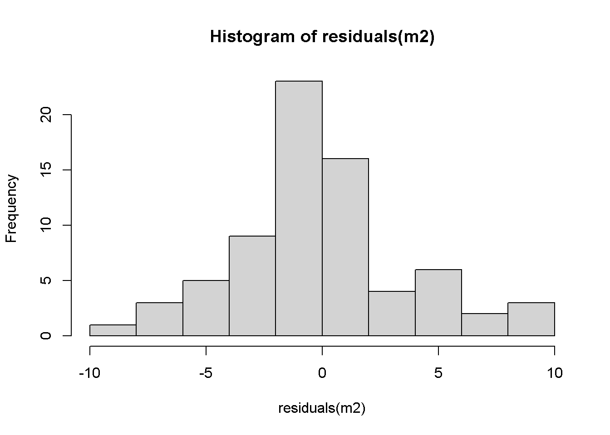
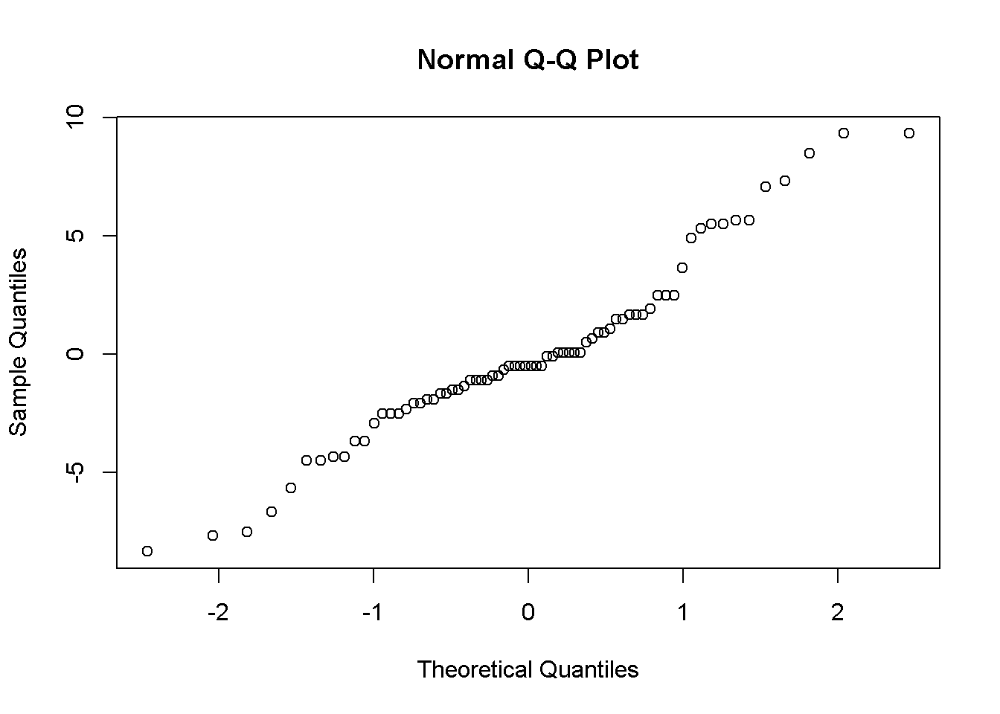
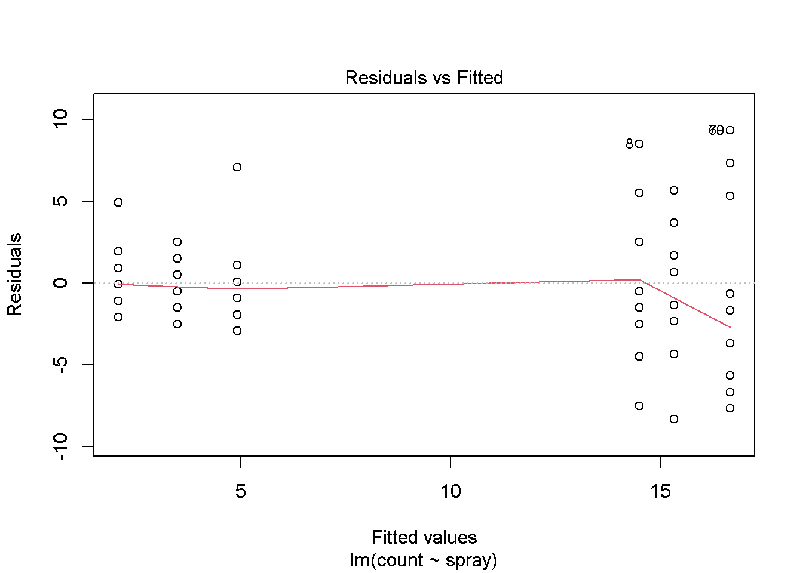
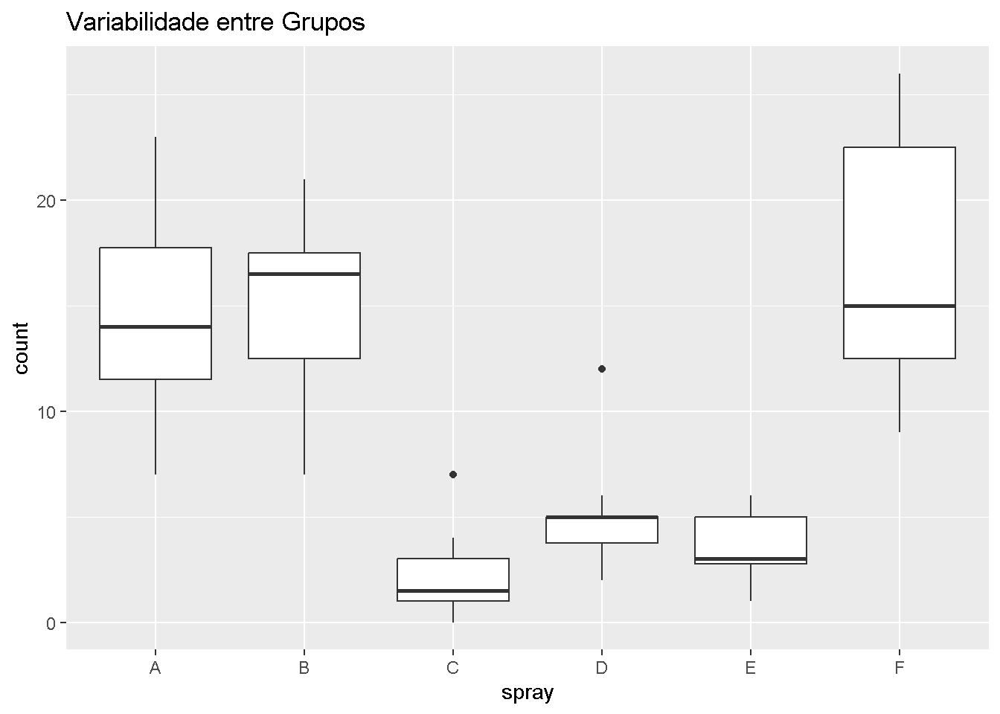

Avaliar esses pressupostos é importante para escolher o teste estatístico mais adequado para descrever seus dados. Isso garante a validade dos resultados obtidos, através de uma maior precisão das conclusões obtidas e da robustez da análise.
Testar a normalidade dos resíduos
Para testar a normalidade dos resíduos, podemos fazer através de análise gráfica (forma visual), e através de testes próprios para isso. A união dos dois métodos é interessante para uma maior certeza do resultado.
Análise gráfica
Pacote datasets
Descrição: Pacote base do R contendo conjuntos de dados clássicos para demonstração e aprendizado. Uso: Fornece exemplos prontos para prática de análise estatística, visualização e modelagem.
if(!require(datasets)) install.packages("datasets")library(datasets)insect <- InsectSpraysm2 <-lm(count ~ spray, data = insect)hist(residuals(m2))

qqnorm(residuals(m2))

# Quanto mais próximos da distribuição diagonal, maior é a chance da normalidade ser presente
Análise com testes
Existem vários testes para analisar a normalidade dos resíduos de um modelo, um exemplo deles é o teste de Shapiro-Wilk O teste de Shapiro-Wilk assume como hipóteses estatísticas: - H0 = Dados seguem a distribuição normal - H1 = Dados não seguem a distribuição normal Ou seja, para valores p menores ou iguais ao alfa estipulado, os dados não seguem a normalidade. E, para valores p maiores que o alfa estipulado, os dados seguem a normalidade.
shapiro.test(residuals(m2))
Shapiro-Wilk normality test
data: residuals(m2)
W = 0.96006, p-value = 0.02226
Teste para normaldiade de resíduos com o pacote DHARMa
Pacote DHARMa
Descrição: Ferramentas para diagnóstico de modelos estatísticos, especialmente GLMMs.
Uso: Gera resíduos simulados para verificar a adequação de modelos.
if(!require(DHARMa)) install.packages("DHARMa")
Carregando pacotes exigidos: DHARMa
Warning: package 'DHARMa' was built under R version 4.3.3
Warning in check_dep_version(): ABI version mismatch:
lme4 was built with Matrix ABI version 1
Current Matrix ABI version is 0
Please re-install lme4 from source or restore original 'Matrix' package
This is DHARMa 0.4.7. For overview type '?DHARMa'. For recent changes, type news(package = 'DHARMa')
# Com esse comando, você pode avaliar normalidade e homocedasticidade de forma conjunta e prática
Testar a homocedasticidade
Para testar a homogeneidade das variâncias, podemos fazer através de análise gráfica (forma visual), e através de testes próprios para isso. A união dos dois métodos é interessante para uma maior certeza do resultado.
Análise gráfica
Gráfico de Resíduos vs. Valores Ajustados
Melhor para modelos lineares
m2 <-lm(count ~ spray, data = insect)plot(m2, which =1)

Boxplot por Grupo
Melhor para comparação entre grupos
if(!require(ggplot2)) install.packages("ggplot2")
Carregando pacotes exigidos: ggplot2
library(ggplot2)ggplot(insect, aes(x = spray, y = count)) +geom_boxplot() +labs(title ="Variabilidade entre Grupos")

Análise com testes
Geralmente, os testes de homocedasticidade tem as hipóteses estatísticas seguindo o mesmo padrão dos testes de normalidade citados As hipóteses estatísticas normalmente são: - H0 = Dados apresentam variâncias homogêneas - H1 = Dados não apresentam variâncias homogêneas
Existem vários testes para avaliar a homogeneidade de variâncias de modelos, aqui exemplificamos dois bastante utilizados.
Teste F para comparar duas variâncias
if(!require(readxl)) install.packages("readxl")
Carregando pacotes exigidos: readxl
Warning: package 'readxl' was built under R version 4.3.3
F test to compare two variances
data: mg2$Mg2 and mg2$control
F = 1.4781, num df = 9, denom df = 9, p-value = 0.5698
alternative hypothesis: true ratio of variances is not equal to 1
95 percent confidence interval:
0.3671417 5.9508644
sample estimates:
ratio of variances
1.478111
Teste de Bartlett
if(!require(datasets)) install.packages("datasets")library(datasets)insect <- InsectSpraysbartlett.test(count ~ spray, data = insect)
Bartlett test of homogeneity of variances
data: count by spray
Bartlett's K-squared = 25.96, df = 5, p-value = 9.085e-05